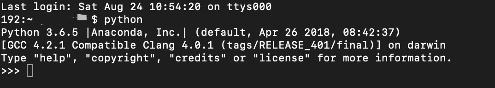
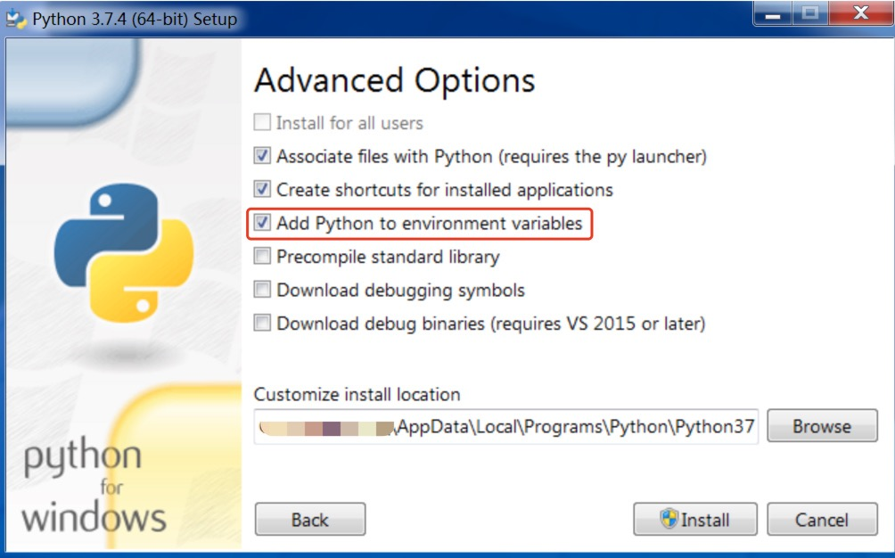

环境配置¶
语言环境：由于 Sphinx 是基于 Python 开发的框架工具，安装和使用 Sphinx 环境需要先配置好 Python 环境，然后通过 Python 安装工具 pip 安装 Sphinx。
检查 Python 环境¶
- MacOS 系统Mac系统一般自带 Python，打开
终端，输入python并按回车键，会进入终端的 Python 临时运行环境，并显示 Python 版本信息。如下图，要退出当前状态，输入quit()即可。  - Windows 系统如果之前未安装过 Python 或其他集成了 Python 的编程环境，一般是没有 Python 环境的，需要安装。检查的方法与 MaxOS 系统类似，通过
开始搜索功能，搜索并打开cmd，输入python后按回车键，如果已安装，则进入 Python 环境，如果没有，则提示命令错误信息。
安装 Python¶
- 从 Anaconda 安装Annaconda 是一个开源的 python 包资源管理器，通过 Anaconda 配置 Python 环境可以不通过命令行安装 Sphinx。在 Anaconda 官网下载适合电脑系统的版本，注意选择 python3.7版本的 Anaconda。
- 从 Python 官网安装从 Python 官网选择合适的 Python 3.X.X 版本进行下载安装，从官网下载安装包速度较慢是正常现象。注意： 如下图，Windows 安装 Python 时需要勾选将 Python 到搭配环境变量选项。 
Python 安装问题¶
- 如何将 Python 路径添加到环境变量
- MacOS 系统如何彻底删除 Python2 版本